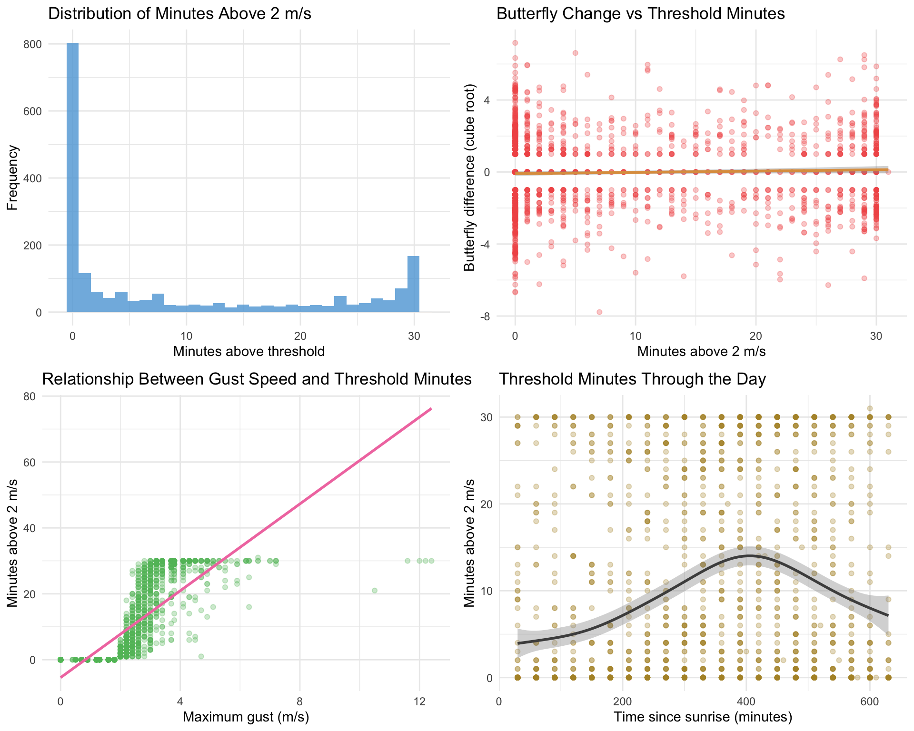
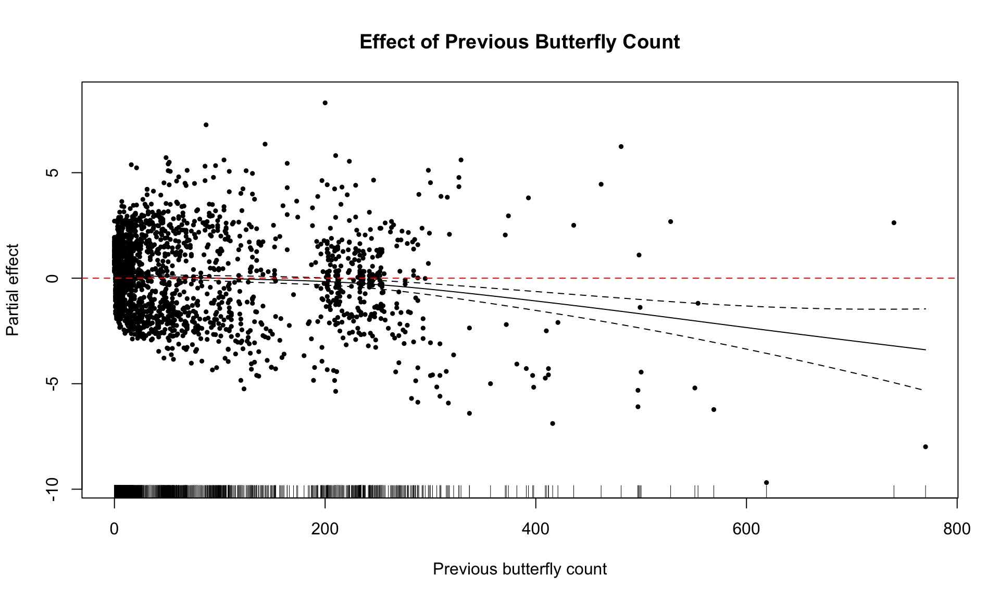

library(tidyverse)
library(mgcv)
library(nlme)
library(lubridate)
library(knitr)
library(here)
library(gridExtra)
monarch_data <- read_csv(here("data", "monarch_analysis_lag30min.csv"))Threshold Wind Model Analysis for Overwintering Monarchs
Overview
This document isolates the sensitivity analyses that evaluate a binary wind disruption hypothesis: that minutes with wind speeds exceeding 2 m/s reduce monarch abundance at overwintering sites. The analysis replicates the mixed-effects GAM approach used in the GAM comparison workflow but constrains the candidate set to models that contain the threshold predictor. Outputs include ranked model performance diagnostics, summaries of the highest ranked threshold model, and exportable tables and figures for the thesis results chapter.
Setup
Data Preparation
model_data <- monarch_data %>%
filter(
!is.na(butterfly_difference_cbrt),
!is.na(total_butterflies_t_lag),
!is.na(minutes_above_threshold),
!is.na(temperature_avg),
!is.na(butterflies_direct_sun_t_lag),
!is.na(deployment_id),
!is.na(deployment_day),
!is.na(Observer),
!is.na(observation_order_within_day_t)
)
cat("Threshold analysis dataset has", nrow(model_data), "observations\n")Threshold analysis dataset has 1894 observationsp1 <- ggplot(model_data, aes(x = minutes_above_threshold)) +
geom_histogram(bins = 30, fill = "#5DA5DA", alpha = 0.8) +
labs(
title = "Distribution of Minutes Above 2 m/s",
x = "Minutes above threshold",
y = "Frequency"
) +
theme_minimal()
p2 <- ggplot(model_data, aes(x = minutes_above_threshold, y = butterfly_difference_cbrt)) +
geom_point(alpha = 0.3, color = "#F15854") +
geom_smooth(method = "gam", formula = y ~ s(x), se = TRUE, color = "#DE9D4D") +
labs(
title = "Butterfly Change vs Threshold Minutes",
x = "Minutes above 2 m/s",
y = "Butterfly difference (cube root)"
) +
theme_minimal()
p3 <- ggplot(model_data, aes(x = max_gust, y = minutes_above_threshold)) +
geom_point(alpha = 0.3, color = "#60BD68") +
geom_smooth(method = "lm", se = FALSE, color = "#F17CB0") +
labs(
title = "Relationship Between Gust Speed and Threshold Minutes",
x = "Maximum gust (m/s)",
y = "Minutes above 2 m/s"
) +
theme_minimal()
p4 <- ggplot(model_data, aes(x = time_within_day_t, y = minutes_above_threshold)) +
geom_point(alpha = 0.3, color = "#B2912F") +
geom_smooth(method = "gam", formula = y ~ s(x), se = TRUE, color = "#4D4D4D") +
labs(
title = "Threshold Minutes Through the Day",
x = "Time since sunrise (minutes)",
y = "Minutes above 2 m/s"
) +
theme_minimal()
grid.arrange(p1, p2, p3, p4, ncol = 2)
The threshold predictor appears infrequently, with most observations registering zero minutes above 2 m/s; correlations with gust speed are positive but feature high variance, underscoring the limited discriminatory power of the binary wind specification.
Model Infrastructure
random_structure <- list(deployment_id = ~1, Observer = ~1, deployment_day = ~1)
correlation_structure <- corAR1(form = ~ observation_order_within_day_t | deployment_day)
fit_model_safely <- function(formula_str, data) {
tryCatch({
gamm(
formula = as.formula(formula_str),
data = data,
random = random_structure,
correlation = correlation_structure,
method = "REML"
)
},
error = function(e) {
message("Failed to fit model: ", formula_str)
message("Error: ", e$message)
NULL
}
)
}Threshold Model Specifications
threshold_model_specs <- list(
"T1" = "butterfly_difference_cbrt ~ total_butterflies_t_lag",
"T2" = "butterfly_difference_cbrt ~ total_butterflies_t_lag + minutes_above_threshold",
"T3" = "butterfly_difference_cbrt ~ total_butterflies_t_lag + temperature_avg",
"T4" = "butterfly_difference_cbrt ~ total_butterflies_t_lag + butterflies_direct_sun_t_lag",
"T5" = "butterfly_difference_cbrt ~ total_butterflies_t_lag + minutes_above_threshold + temperature_avg",
"T6" = "butterfly_difference_cbrt ~ total_butterflies_t_lag + minutes_above_threshold + butterflies_direct_sun_t_lag",
"T7" = "butterfly_difference_cbrt ~ total_butterflies_t_lag + temperature_avg + butterflies_direct_sun_t_lag",
"T8" = "butterfly_difference_cbrt ~ total_butterflies_t_lag + minutes_above_threshold + temperature_avg + butterflies_direct_sun_t_lag",
"T9" = "butterfly_difference_cbrt ~ total_butterflies_t_lag + minutes_above_threshold * temperature_avg",
"T10" = "butterfly_difference_cbrt ~ total_butterflies_t_lag + minutes_above_threshold * butterflies_direct_sun_t_lag",
"T11" = "butterfly_difference_cbrt ~ total_butterflies_t_lag + temperature_avg * butterflies_direct_sun_t_lag",
"T12" = "butterfly_difference_cbrt ~ total_butterflies_t_lag + minutes_above_threshold * temperature_avg + butterflies_direct_sun_t_lag",
"T13" = "butterfly_difference_cbrt ~ total_butterflies_t_lag + minutes_above_threshold * butterflies_direct_sun_t_lag + temperature_avg",
"T14" = "butterfly_difference_cbrt ~ total_butterflies_t_lag + temperature_avg * butterflies_direct_sun_t_lag + minutes_above_threshold",
"T15" = "butterfly_difference_cbrt ~ total_butterflies_t_lag + minutes_above_threshold * temperature_avg + minutes_above_threshold * butterflies_direct_sun_t_lag + temperature_avg * butterflies_direct_sun_t_lag",
"T16" = "butterfly_difference_cbrt ~ total_butterflies_t_lag + minutes_above_threshold * temperature_avg * butterflies_direct_sun_t_lag",
"T17" = "butterfly_difference_cbrt ~ s(total_butterflies_t_lag) + s(temperature_avg) + s(butterflies_direct_sun_t_lag)",
"T18" = "butterfly_difference_cbrt ~ s(total_butterflies_t_lag) + temperature_avg + s(butterflies_direct_sun_t_lag)",
"T19" = "butterfly_difference_cbrt ~ s(total_butterflies_t_lag) + s(minutes_above_threshold) + temperature_avg + s(butterflies_direct_sun_t_lag)",
"T20" = "butterfly_difference_cbrt ~ s(total_butterflies_t_lag) + s(temperature_avg) + s(butterflies_direct_sun_t_lag)",
"T21" = "butterfly_difference_cbrt ~ s(total_butterflies_t_lag) + s(minutes_above_threshold) + s(temperature_avg) + s(butterflies_direct_sun_t_lag)",
"T22" = "butterfly_difference_cbrt ~ s(total_butterflies_t_lag) + temperature_avg + s(butterflies_direct_sun_t_lag) + s(time_within_day_t)",
"T23" = "butterfly_difference_cbrt ~ s(total_butterflies_t_lag) + s(temperature_avg) + s(butterflies_direct_sun_t_lag) + s(time_within_day_t)",
"T24" = "butterfly_difference_cbrt ~ s(total_butterflies_t_lag) + s(minutes_above_threshold) + s(temperature_avg) + s(butterflies_direct_sun_t_lag) + s(time_within_day_t)",
"T25" = "butterfly_difference_cbrt ~ 1",
"T26" = "butterfly_difference_cbrt ~ minutes_above_threshold",
"T27" = "butterfly_difference_cbrt ~ temperature_avg",
"T28" = "butterfly_difference_cbrt ~ butterflies_direct_sun_t_lag",
"T29" = "butterfly_difference_cbrt ~ minutes_above_threshold + temperature_avg",
"T30" = "butterfly_difference_cbrt ~ minutes_above_threshold + butterflies_direct_sun_t_lag",
"T31" = "butterfly_difference_cbrt ~ temperature_avg + butterflies_direct_sun_t_lag",
"T32" = "butterfly_difference_cbrt ~ minutes_above_threshold + temperature_avg + butterflies_direct_sun_t_lag",
"T33" = "butterfly_difference_cbrt ~ minutes_above_threshold * temperature_avg",
"T34" = "butterfly_difference_cbrt ~ minutes_above_threshold * butterflies_direct_sun_t_lag",
"T35" = "butterfly_difference_cbrt ~ temperature_avg * butterflies_direct_sun_t_lag",
"T36" = "butterfly_difference_cbrt ~ minutes_above_threshold * temperature_avg + butterflies_direct_sun_t_lag",
"T37" = "butterfly_difference_cbrt ~ minutes_above_threshold * butterflies_direct_sun_t_lag + temperature_avg",
"T38" = "butterfly_difference_cbrt ~ temperature_avg * butterflies_direct_sun_t_lag + minutes_above_threshold",
"T39" = "butterfly_difference_cbrt ~ minutes_above_threshold * temperature_avg + minutes_above_threshold * butterflies_direct_sun_t_lag + temperature_avg * butterflies_direct_sun_t_lag",
"T40" = "butterfly_difference_cbrt ~ minutes_above_threshold * temperature_avg * butterflies_direct_sun_t_lag",
"T41" = "butterfly_difference_cbrt ~ s(minutes_above_threshold) + temperature_avg + s(butterflies_direct_sun_t_lag)",
"T42" = "butterfly_difference_cbrt ~ s(minutes_above_threshold) + s(temperature_avg) + s(butterflies_direct_sun_t_lag)",
"T43" = "butterfly_difference_cbrt ~ s(minutes_above_threshold) + temperature_avg + s(butterflies_direct_sun_t_lag) + s(time_within_day_t)",
"T44" = "butterfly_difference_cbrt ~ s(minutes_above_threshold) + s(temperature_avg) + s(butterflies_direct_sun_t_lag) + s(time_within_day_t)"
)
cat("Total threshold candidate models:", length(threshold_model_specs), "\n")Total threshold candidate models: 44 Model Fitting
threshold_fitted_models <- map(threshold_model_specs, ~ fit_model_safely(.x, model_data))
threshold_successful_models <- threshold_fitted_models[!map_lgl(threshold_fitted_models, is.null)]
cat("Successfully fitted", length(threshold_successful_models), "threshold models\n")Successfully fitted 44 threshold modelsModel Comparison
threshold_aic_results <- map_dfr(names(threshold_successful_models), function(model_name) {
model <- threshold_successful_models[[model_name]]
tibble(
Model = model_name,
Formula = threshold_model_specs[[model_name]],
AIC = AIC(model$lme),
LogLik = logLik(model$lme)[1],
df = attr(logLik(model$lme), "df")
)
}) %>%
arrange(AIC)
best_general_formula <- "butterfly_difference_cbrt ~ s(total_butterflies_t_lag) + s(temperature_avg) + s(butterflies_direct_sun_t_lag) + s(time_within_day_t)"
best_general_model <- fit_model_safely(best_general_formula, model_data)
best_general_aic <- AIC(best_general_model$lme)
threshold_aic_results <- threshold_aic_results %>%
mutate(
Delta_AIC = AIC - best_general_aic,
Weight = {
numerators <- exp(-0.5 * Delta_AIC)
numerators / sum(numerators)
}
)
threshold_aic_results %>%
select(Model, Formula, AIC, Delta_AIC, Weight, df) %>%
head(10) %>%
kable(digits = 3, caption = "Top threshold models ranked by AIC and compared to the best continuous-wind model (M23)")| Model | Formula | AIC | Delta_AIC | Weight | df |
|---|---|---|---|---|---|
| T23 | butterfly_difference_cbrt ~ s(total_butterflies_t_lag) + s(temperature_avg) + s(butterflies_direct_sun_t_lag) + s(time_within_day_t) | 8081.848 | 0.000 | 0.898 | 14 |
| T22 | butterfly_difference_cbrt ~ s(total_butterflies_t_lag) + temperature_avg + s(butterflies_direct_sun_t_lag) + s(time_within_day_t) | 8086.644 | 4.796 | 0.082 | 13 |
| T24 | butterfly_difference_cbrt ~ s(total_butterflies_t_lag) + s(minutes_above_threshold) + s(temperature_avg) + s(butterflies_direct_sun_t_lag) + s(time_within_day_t) | 8089.408 | 7.560 | 0.020 | 16 |
| T17 | butterfly_difference_cbrt ~ s(total_butterflies_t_lag) + s(temperature_avg) + s(butterflies_direct_sun_t_lag) | 8105.876 | 24.028 | 0.000 | 12 |
| T20 | butterfly_difference_cbrt ~ s(total_butterflies_t_lag) + s(temperature_avg) + s(butterflies_direct_sun_t_lag) | 8105.876 | 24.028 | 0.000 | 12 |
| T44 | butterfly_difference_cbrt ~ s(minutes_above_threshold) + s(temperature_avg) + s(butterflies_direct_sun_t_lag) + s(time_within_day_t) | 8108.379 | 26.530 | 0.000 | 14 |
| T21 | butterfly_difference_cbrt ~ s(total_butterflies_t_lag) + s(minutes_above_threshold) + s(temperature_avg) + s(butterflies_direct_sun_t_lag) | 8110.567 | 28.719 | 0.000 | 14 |
| T18 | butterfly_difference_cbrt ~ s(total_butterflies_t_lag) + temperature_avg + s(butterflies_direct_sun_t_lag) | 8114.431 | 32.583 | 0.000 | 11 |
| T43 | butterfly_difference_cbrt ~ s(minutes_above_threshold) + temperature_avg + s(butterflies_direct_sun_t_lag) + s(time_within_day_t) | 8115.505 | 33.657 | 0.000 | 13 |
| T19 | butterfly_difference_cbrt ~ s(total_butterflies_t_lag) + s(minutes_above_threshold) + temperature_avg + s(butterflies_direct_sun_t_lag) | 8119.798 | 37.949 | 0.000 | 13 |
Threshold Model Selection Table
get_threshold_pvalue <- function(model) {
gam_summary <- summary(model$gam)
pvals <- numeric(0)
if (!is.null(gam_summary$p.table)) {
param_rows <- grep("minutes_above_threshold", rownames(gam_summary$p.table), fixed = TRUE)
if (length(param_rows) > 0) {
pvals <- c(pvals, gam_summary$p.table[param_rows, "Pr(>|t|)"])
}
}
if (!is.null(gam_summary$s.table)) {
smooth_rows <- grep("minutes_above_threshold", rownames(gam_summary$s.table), fixed = TRUE)
if (length(smooth_rows) > 0) {
pvals <- c(pvals, gam_summary$s.table[smooth_rows, "p-value"])
}
}
if (length(pvals) == 0) {
return(NA_character_)
}
format.pval(min(pvals, na.rm = TRUE), digits = 3)
}
create_readable_terms <- function(formula_str) {
rhs <- str_remove(formula_str, "^butterfly_difference_cbrt ~ ")
rhs <- str_replace_all(rhs, "\\n", " ")
terms <- str_split(rhs, "\\+")[[1]]
terms <- trimws(terms[terms != ""])
map_chr(terms, function(term) {
is_smooth <- startsWith(term, "s(")
core <- if (is_smooth) str_match(term, "s\\(([^)]+)\\)")[, 2] else term
readable <- case_when(
core == "total_butterflies_t_lag" ~ "Previous butterfly count",
core == "minutes_above_threshold" ~ "Minutes above 2 m/s",
core == "temperature_avg" ~ "Temperature",
core == "butterflies_direct_sun_t_lag" ~ "Butterflies in direct sun",
core == "time_within_day_t" ~ "Time since sunrise",
TRUE ~ core
)
prefix <- "- "
suffix <- if (is_smooth) "" else " (linear)"
paste0(prefix, readable, suffix)
}) %>%
paste(collapse = "\\n") %>%
{
if (. == "") "- intercept only" else .
}
}
threshold_table <- threshold_aic_results %>%
mutate(ContainsThreshold = str_detect(Formula, "minutes_above_threshold")) %>%
filter(ContainsThreshold) %>%
slice_head(n = 5) %>%
mutate(
Terms = map_chr(Formula, create_readable_terms),
`Wind threshold p-value` = map_chr(Model, ~ {
if (.x %in% names(threshold_successful_models)) {
get_threshold_pvalue(threshold_successful_models[[.x]])
} else {
NA_character_
}
}),
AIC = round(AIC, 3),
Delta_AIC = round(Delta_AIC, 3),
Weight = round(Weight, 4)
) %>%
select(`Model ID` = Model, `Terms included` = Terms, `AIC value` = AIC, `ΔAIC` = Delta_AIC, Weight, `Wind threshold p-value`)
kable(
threshold_table,
caption = "Model selection results from sensitivity analysis using wind threshold predictor (minutes with wind speed > 2 m/s). Poor model performance (high ΔAIC values) demonstrates lack of support for the 2 m/s disruption threshold.",
booktabs = TRUE,
align = "l"
)| Model ID | Terms included | AIC value | ΔAIC | Weight | Wind threshold p-value |
|---|---|---|---|---|---|
| T24 | - Previous butterfly count- Minutes above 2 m/s- Temperature- Butterflies in direct sun- Time since sunrise | 8089.408 | 7.560 | 0.0205 | 0.372 |
| T44 | - Minutes above 2 m/s- Temperature- Butterflies in direct sun- Time since sunrise | 8108.379 | 26.530 | 0.0000 | 0.256 |
| T21 | - Previous butterfly count- Minutes above 2 m/s- Temperature- Butterflies in direct sun | 8110.567 | 28.719 | 0.0000 | 0.0528 |
| T43 | - Minutes above 2 m/s- Temperature (linear)- Butterflies in direct sun- Time since sunrise | 8115.505 | 33.657 | 0.0000 | 0.275 |
| T19 | - Previous butterfly count- Minutes above 2 m/s- Temperature (linear)- Butterflies in direct sun | 8119.798 | 37.949 | 0.0000 | 0.0776 |
Best Threshold Model Summary
if (nrow(threshold_aic_results) > 0) {
best_threshold_model_name <- threshold_aic_results$Model[1]
best_threshold_model <- threshold_successful_models[[best_threshold_model_name]]
cat("Best threshold model:", best_threshold_model_name, "\n")
cat("Formula:", threshold_aic_results$Formula[1], "\n\n")
summary(best_threshold_model$gam)
} else {
cat("No threshold models were successfully fitted.\n")
}Best threshold model: T23
Formula: butterfly_difference_cbrt ~ s(total_butterflies_t_lag) + s(temperature_avg) + s(butterflies_direct_sun_t_lag) + s(time_within_day_t)
Family: gaussian
Link function: identity
Formula:
butterfly_difference_cbrt ~ s(total_butterflies_t_lag) + s(temperature_avg) +
s(butterflies_direct_sun_t_lag) + s(time_within_day_t)
Parametric coefficients:
Estimate Std. Error t value Pr(>|t|)
(Intercept) 0.1765 0.4453 0.396 0.692
Approximate significance of smooth terms:
edf Ref.df F p-value
s(total_butterflies_t_lag) 2.621 2.621 12.020 8.26e-07 ***
s(temperature_avg) 3.930 3.930 3.230 0.0283 *
s(butterflies_direct_sun_t_lag) 1.534 1.534 19.356 1.22e-05 ***
s(time_within_day_t) 4.898 4.898 8.901 < 2e-16 ***
---
Signif. codes: 0 '***' 0.001 '**' 0.01 '*' 0.05 '.' 0.1 ' ' 1
R-sq.(adj) = 0.0568
Scale est. = 4.0332 n = 1894Threshold Effect Plots
if (exists("best_threshold_model") && !is.null(best_threshold_model)) {
plot(best_threshold_model$gam,
select = 1,
main = "Effect of Previous Butterfly Count",
xlab = "Previous butterfly count",
ylab = "Partial effect",
residuals = TRUE,
pch = 19,
cex = 0.5)
abline(h = 0, lty = 2, col = "red")
}
if (exists("best_threshold_model") && !is.null(best_threshold_model)) {
smooth_terms <- summary(best_threshold_model$gam)$s.table
smooth_rows <- grep("minutes_above_threshold", rownames(smooth_terms))
if (length(smooth_rows) > 0) {
plot(best_threshold_model$gam,
select = smooth_rows[1] + 1,
main = "Effect of Minutes Above 2 m/s",
xlab = "Minutes above threshold",
ylab = "Partial effect",
residuals = TRUE,
pch = 19,
cex = 0.5)
abline(h = 0, lty = 2, col = "red")
} else {
cat("Best model does not include a smooth for minutes_above_threshold.\n")
}
}Best model does not include a smooth for minutes_above_threshold.Exports
export_dir <- here("thesis_exports")
fig_dir <- file.path(export_dir, "figures")
tab_dir <- file.path(export_dir, "tables")
if (!dir.exists(export_dir)) dir.create(export_dir, recursive = TRUE)
if (!dir.exists(fig_dir)) dir.create(fig_dir, recursive = TRUE)
if (!dir.exists(tab_dir)) dir.create(tab_dir, recursive = TRUE)
write_csv(threshold_table, file.path(tab_dir, "threshold_model_selection_table.csv"))
threshold_table_tex <- kable(
threshold_table,
format = "latex",
booktabs = TRUE,
caption = "Model selection results from sensitivity analysis using wind threshold predictor (minutes with wind speed > 2 m/s). Poor model performance (high ΔAIC values) demonstrates lack of support for the 2 m/s disruption threshold."
)
writeLines(threshold_table_tex, file.path(tab_dir, "threshold_model_selection_table.tex"))